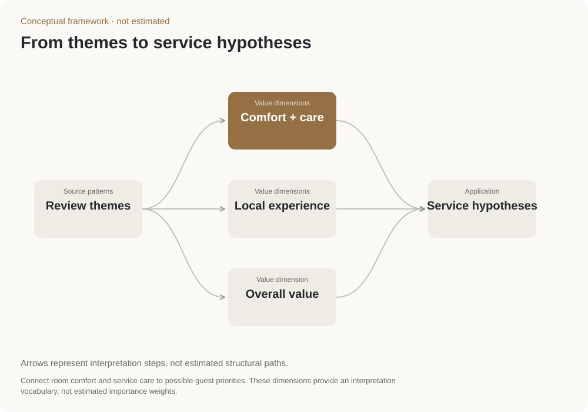

Rest & comfort
Room comfort, calm and service care
Make room readiness and a restful stay reliable.
Which elements of comfort do guests mention and evaluate consistently?
Hospitality · Interpretation framework
Organized themes from hotel reviews into examples of guest needs and possible service responses.
Research synthesis · Understanding guest needs · Service design
Three example guest profiles and questions for a future study.
Companion to the segmentation study

The framework connects review themes, such as comfort and local experiences, with possible hotel services. It provides examples to discuss and test, rather than new customer groups measured from data.
The profiles describe guests seeking comfort, local experiences or reliability. They are discussion tools, not additional groups discovered in the segmentation study.
Discuss which needs a service idea addresses, then check those assumptions through guest interviews or a new study.
These profiles and service ideas are conceptual. Measured group sizes belong to the separate customer-segmentation study.
Each profile shows a review theme, a possible service response and a question to check with guests. These profiles are examples, not measured market segments.
Room comfort, calm and service care
Make room readiness and a restful stay reliable.
Which elements of comfort do guests mention and evaluate consistently?

Food, recommendations and location
Connect guests with a small set of useful local experiences.
Does local experience add value after basic service quality is accounted for?

Access, responsiveness and consistency
Reduce friction during arrival and everyday requests.
Which service failures repeatedly weaken value judgments?
Interpretation framework linked to the Da Nang segmentation study; no separate dataset or numerical weights.
Use the review themes from the linked customer-grouping study.
Organize the ideas around comfort, care and local experience.
Interviews and a new survey could test whether these proposed needs are distinct.
Review theme → value dimension → service hypothesis
The profiles organize questions for service design. They are not additional observed clusters or measured market shares.
This map is an interpretation framework linked to the segmentation study.

Source patterns
Start with recurring themes from the Da Nang review analysis. This framework does not add an independent dataset.
Value dimensions
Connect room comfort and service care to possible guest priorities. These dimensions provide an interpretation vocabulary, not estimated importance weights.
Value dimensions
Connect food, location and ambience with what guests seek during a stay. Avoid assigning the same priority to every guest group.
Value dimension
Relate price and the overall stay to value judgments. A theme alone does not identify willingness to pay.
Application
Translate themes into service or messaging options to test. A plausible guest story remains a hypothesis until measured.